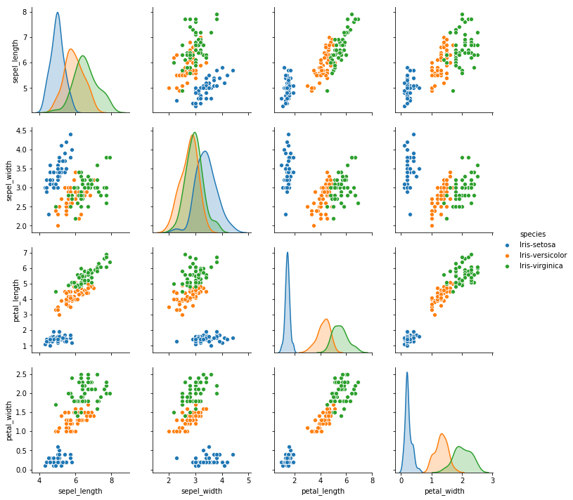

数据探索
## 导包
import pandas as pd
import matplotlib.pyplot as plt
import seaborn as sns
1.提出问题
对给定的iris.data数据集进行探索和分析，来决定是否可以基于iris.data数据集建立鸢尾花的分类AI模型。
2.导入数据
datasets_path = 'data/iris.data'
iris = pd.read_csv(datasets_path,header=None)
iris.columns =["sepel_length",'sepel_width',"petal_length",'petal_width','species']
print(iris.head())
sepel_length sepel_width petal_length petal_width species
0 5.1 3.5 1.4 0.2 Iris-setosa
1 4.9 3.0 1.4 0.2 Iris-setosa
2 4.7 3.2 1.3 0.2 Iris-setosa
3 4.6 3.1 1.5 0.2 Iris-setosa
4 5.0 3.6 1.4 0.2 Iris-setosa
3.探索数据
sns.pairplot(iris,hue='species')
<seaborn.axisgrid.PairGrid at 0x11afa7518>

4.数据的筛选与处理
# 抽取出两种鸢尾花setosa和versicolor的数据
iris_bi_dataset = iris.loc[iris.species.isin(["Iris-setosa","Iris-versicolor"])]
print(len(iris_bi_dataset))
100
# 保留 petal_length，petal_width,species三列作为二分类的的数据集
iris_bi_dataset = iris_bi_dataset[['petal_length','petal_width','species']]
print(iris_bi_dataset.sample(5))
petal_length petal_width species
2 1.3 0.2 Iris-setosa
15 1.5 0.4 Iris-setosa
93 3.3 1.0 Iris-versicolor
9 1.5 0.1 Iris-setosa
35 1.2 0.2 Iris-setosa
# 将species中的字符型量转化为数值型
iris_bi_dataset.loc[iris_bi_dataset['species']=="Iris-setosa","species"]=0
iris_bi_dataset.loc[iris_bi_dataset['species']=="Iris-versicolor","species"]=1
print(iris_bi_dataset.sample(5))
petal_length petal_width species
88 4.1 1.3 1
28 1.4 0.2 0
81 3.7 1.0 1
79 3.5 1.0 1
50 4.7 1.4 1
# 写成csv文件
iris_bi_dataset.to_csv("data/iris_bi.data.csv",header=None,index=None)
5.结论
综上所述，可以使用 iris_bi.data.csv 进行两种鸢尾花setosa和versicolor的分类。